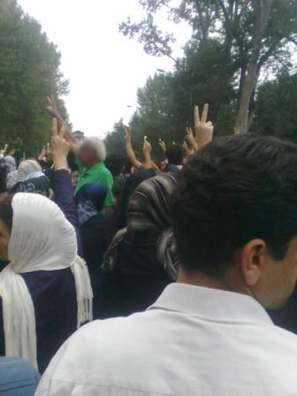
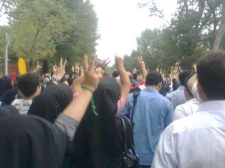
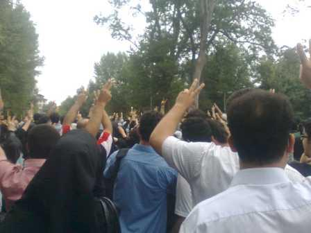
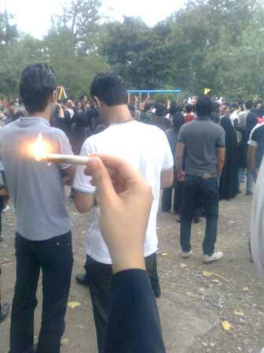

پذيرش > مقالات > علیه سکوت > گامهایی که با تزلزل نا آشنایند/ گرامی داشت چهلم ندا در رشت


 گامهایی که با تزلزل نا آشنایند/ گرامی داشت چهلم ندا در رشت گامهایی که با تزلزل نا آشنایند/ گرامی داشت چهلم ندا در رشت
10 مرداد 1388 - کمپین رشت - نسخه قابل چاپ
عصر روز پنجشنبه 8 مرداد، در ساعت 18.30 گروهی بیست نفره قدم زنان در پارک شهر رشت شکل گرفت که ساکت، اما مصمم در پیاده راه های پارک گام بر می داشت. هنوز نیم ساعت نگذشته بود که این گروه به جمعیتی قریب 2500 تا 3000 نفر بدل شد و همچنان ساکت، مصمم و خشمگین به راهپیمایی خود ادامه داد. بسیاری از مردم دستبند سبز بسته بودند ، شمع هایی داشتند و دستان خود را به علامت پیروزی به آسمان بلند کرده بودند.در میان این عده زن و مرد، پیر و جوان، روشنفکر و عامی، دانشجو و کارمند و بازاری، و به طور خلاصه برشی تمام و کمال از مردم شهر رشت دیده می شد. جمعیت آرام به سمت استخر پارک حرکت کرد. نیروی های انتظامی که به شدت دستپاچه شده بودند و انتظار چنین جمعیتی را نداشتند به تدریج در پارک بیشتر و بیشتر شدند. پلیس از مردم خواهش می کرد متفرق شوند و سپس تهدید می کرد این آخرین "اخطار" است

با ورود لباس شخصی های همه کاره!! و ویراژ دادنشان ، جمعیت که تا این لحظه همچنان با متانت در برابر "اخطار- التماس" های نیروی انتظامی سکوت کرده بود یکصدا فریاد زد "نترسید، نترسید، ما همه با هم هستیم". نیروی انتظامی به سرعت راه خروج از پارک را سد کرد و لباس شخصی ها شروع به فیلمبرداری کردند. باور کردنی نبود، این نیروها که در روزهای یکشنبه و دوشنبه (24 و 25 خرداد) به طرز وحشیانه ای مردم را کتک می زدند این بار توان رویارویی با آنها را نداشتند. موقعیت پارک به عنوان مکانی عمومی و متعلق به همه، آنها را فلج می کرد. مردم شعار می دادند و در کنارشان کودکان در زمین بازی مشغول بازی بودند!جمعیت در میان دو زمین بازی پارک توقف کرد و برای چند دقیقه با "الله و اکبر" و "صلوات" با منادیان دین به مقابله برخاست.

سپس لباس شخصی ها با سرعت زیاد از میان مردم با موتور گذشتند تا با این شیوه آنها را متفرق کنند. جمعیت دو شقه شد و در دو زمین بازی پارک جای گرفت. کم کم لباس شخصی ها که تا این لحظه جرأت زد و خورد نداشتند شروع به کتک زدن چند جوان کردند. ناگهان باران سنگ بر سرشان فرود آمد. این مردم بودند که خرده سنگ های کف زمین بازی را به سویشان پرتاب می کردند. کودکان همچنان در حال بازی بودند. صحنه خنده داری بود. لباس شخصی ها از کتک زدن دست کشیدند و عقب نشینی کردند. پلیس و مردم شگفت زده بودند. مردم می خندیدند و لباس شخصی های به موتورها و بی سیم هایشان پناه می بردند تا برای خرج از این وضعیت راهی بیابند. لباس شخصی ها رفته رفته بیشتر شدند و تلاش کردند وضعیت به خشونت کشیده شود. در این هنگام جمعیتی که تا چند دقیقه پیش در حال مخالفت با دولت کودتا بود ناگهان متفرق شد. پدر و مادری که فرزندشان را تاب می دهند. زن و مردی که روی نیمکت نشسته اند. پارک در یک لحظه به حالت عادی برگشت و موتوری ها و پلیس همچنان سر در گم به این طرف و آن طرف می رفتند. اکنون دیگر همه چیز عادی بود به جز رفت و آمد پلیس و موتوری هایی که با سرعت در پیاده راه ها ویراژ می دادند تا شاید کسی از آنها بترسد! مانورهای دسته جمعی موتوری های لباس شخصی در میانه پارک این بار فقط مردم را می خنداند.

به چند علت می توان تجمع پنجشنبه پارک شهر را تجربه ای غنی و موفق دانست:
1- حضور همه لایه های سنی و موقعیتی مردم و همراهی و نه فقط تماشا کردن تجمع (شاید بتوان با چماق پسر 19 ساله سبز پوش را کتک زد، اما با پیرمرد 70 ساله سبز پوش باید چه برخوردی کرد؟)
2- موقعیت و فضای باز پارک،
3- حضور کودکان در کنار تجمع کنندگان که قدرت مانور لباس شخصی ها را کم می کرد،
عمده ترین پیامد این تجمع ریختن ترس مردمی بود که در روزهای ابتدای انتخابات به بدترین شیوه سرکوب شده بودند. در میان راهپیمایی بسته ای کاغذ بر روی زمین افتاد و در میان مردم پخش شد. عنوان این برگ چنین بود: شبی در منفی چهار وزارت کشور، اینجا از گوانتانامو صد پله بدتر است. این برگه حاوی اطلاعاتی درباره حمله ی کوی دانشگاه و آنچه بر دانشجویان زندانی گذشت بود.

مردم کار خود را به بهترین شیوه انجام دادند و تجمع پارک شهر با بیشترین حضور و کمترین هزینه به هدف خود رسید. خبر در تمام شهر پیچید و تا واپسین ساعات شب دسته دسته مردم به پارک آمدند تا اگر هنوز خبری باشد در آن شرکت کنند. پلیس ها هراسان در پارک چرخ زدند و پارک محتشم رشت یکی از شلوغ ترین شبهای خود را سپری کرد.
کمپین رشت
ارسال به
بالاترین
،
توییتر
،
فریندفید
،
فیسبوک
در همين بخش :
 8 مارس روزی که نمی توان از ما دریغ کرد 8 مارس روزی که نمی توان از ما دریغ کرد
با طلاق توافقی از حقارت و کتک و فحش رها شدم /گزارشی از دادگاه محلاتی: مریم مالک
تجمع مادران عزادار در رشت
تغییر ممکن است/ جلوه جواهری(26 روز پس از بازداشت کاوه مظفری)
گامهایی که با تزلزل نا آشنایند/ گرامی داشت چهلم ندا در رشت
ديگر بخش ها :
طرح یک میلیون امضا
|
مقالات
|
سایت نوشته ها
|
اخبار
|
گزارش كمپين
|
گفت و گو
|
علیه سکوت
|
كوچه به كوچه
|
نامه های شما
|
گزارش ویژه
|
گفتگو با اعضا
|
ویژه سالگرد کمپین
|
تصویر برابری
|
دل آرام علی
|
تریبون
|
مقالات
|
تاریخ شفاهی
|
خارج از چارچوب
|
کتابخانه
|
درباره کمپین
|
کمپین در شهرها
|
کمپین در بند
|
صدای تغییر
|
ویژه 22 خرداد
|
لایحه حمایت از خانواده
|
گالری
|
عشا مومنی
|
امیر یعقوبعلی
|
خدیجه مقدم
|
راحله عسگری زاده و نسیم خسروی
|
پروین اردلان،جلوه جواهری، مریم حسین خواه، ناهید کشاورز
|
زینب پیغمبرزاده
|
سعیده امین، سارا ایمانیان، محبوبه حسین زاده، ناهید کشاورز و همایون نامی
|
احترام شادفر
|
نسیم سرابندی زاده،فاطمه دهدشتی
|
وبلاگ مهمان
|
پرونده خرم آباد
|
دستگیری ها
|
مریم مالک
|
پرستو اللهیاری
|
مهرنوش اعتمادی
|
سمیه رشیدی
|
Other Languages
|
همراهان
|
«فراخوان کمپین ده روز با بهاره هدایت»
| English
|